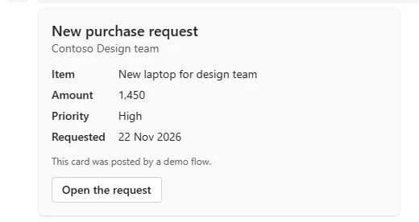

- Power Automate
- Level 3 · Triggers and connectors · 5 of 7
Adaptive Cards in Teams
An Adaptive Card is a small layout described in JSON: headings, a list of facts, images and buttons. Teams draws it the same way on desktop and phone.
From JSON to card
WhatA JSON description of a layout that Teams renders as a card.
WhyPeople scan a card in two seconds; a wall of text gets skipped.
DemoA purchase request card with three facts and a button.
How a card is made
Design it in the Adaptive Card Designer
Paste the JSON into Post card in a chat or channel
Swap fixed values for dynamic content
Teams renders the card

The JSON behind it
{
"type": "AdaptiveCard",
"version": "1.4",
"body": [
{ "type": "TextBlock", "text": "New purchase request", "weight": "Bolder", "size": "Large" },
{ "type": "TextBlock", "text": "Contoso Design team", "isSubtle": true, "spacing": "None" },
{ "type": "FactSet", "facts": [
{ "title": "Item", "value": "New laptop for design team" },
{ "title": "Amount", "value": "1,450" },
{ "title": "Priority", "value": "High" }
] }
],
"actions": [
{ "type": "Action.OpenUrl", "title": "Open the request", "url": "https://..." }
]
}| Element | Draws | In the demo |
|---|---|---|
| TextBlock | A line of text; weight, size, isSubtle style it | New purchase request |
| FactSet | A two-column list of labels and values | Item, Amount, Priority |
| Action.OpenUrl | A button that opens a link | Open the request |
| version | Card schema version | 1.4 works in Teams |
Putting flow data in the card
{ "title": "Amount", "value": "@{formatNumber(triggerOutputs()?['body/Amount'], 'N0')}" }| Piece | What it does |
|---|---|
"value": "@{...}" | The value stays inside the JSON quotes. |
formatNumber(..., 'N0') | 1450 becomes 1,450. |
Cards that collect answers
Link card vs question card
Post card (Flow bot)
Link buttons only (
Action.OpenUrl)The flow carries on
Post adaptive card and wait for a response
Inputs + Submit button
The flow pauses
Response data in dynamic content
Watch out
- One missing comma or quote breaks the card; validate the JSON.
- Newer features need a higher version; if something doesn't render, try a lower one.
- The old MessageCard format isn't accepted;
typemust beAdaptiveCard.
New to this? Start from the basics optional
JSON: the card is plain text; structure matters.
Common mistakes
- Dynamic values outside the JSON quotes.
- Using a link card when you need an answer.
- Text-heavy cards; use facts.